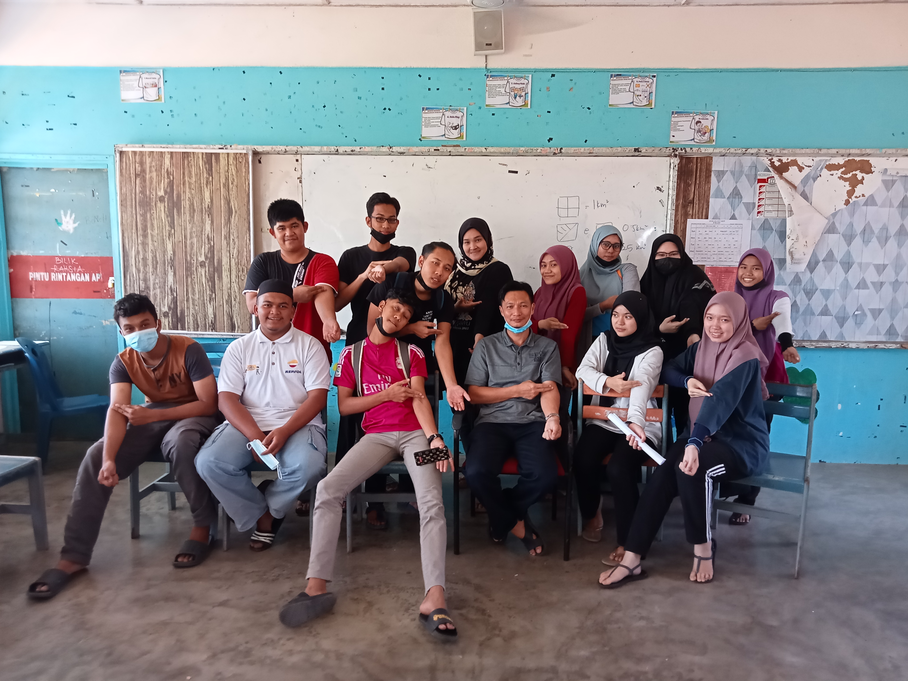
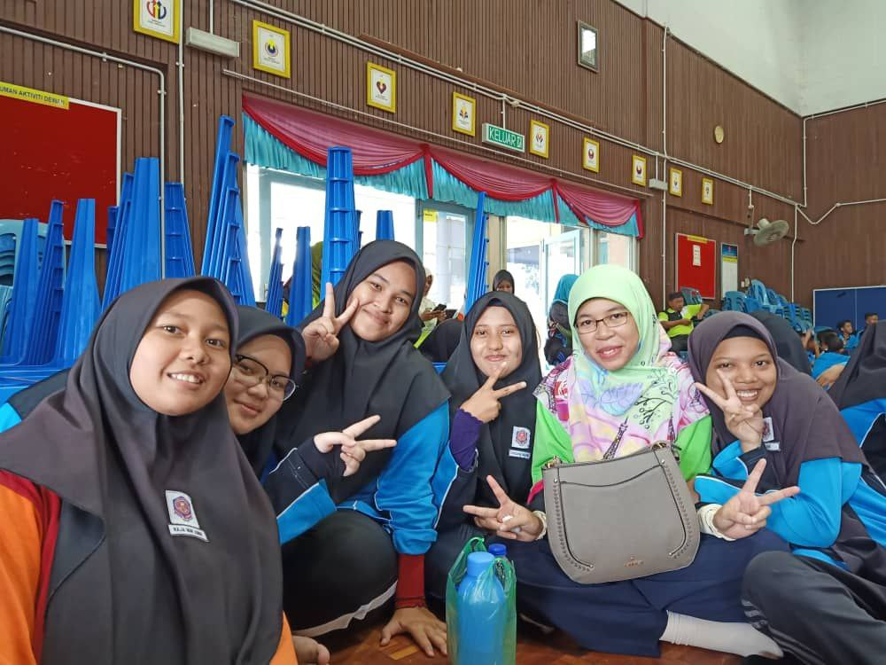

Becoming a Highschooler

My experience as a highschooler in SMK Seri Berang (Siber) was quite so so. Maybe because due to hormone,I'm starting get mature and had learn a lot from surrounding. When they said highschool is the best phase. It is quite true. I found a lot of friends. We share the same laugh and tears. Working hard for SPM. Going to extra class together.
I think my classmate is perfect for me. We can take eachother jokes and respect eachother boundries. We're never stingy when it comes about sharing knowledge in fact we believe it is better to share it by teaching other friends. We came from different background yet we treat eachother like a close siblings

This is the classmate that I'm talking about. We were very close back then but I have lost most of their contact but it is not like I can't see them when I'm around my hometown. Sometimes during semester break. I do hangout with them. Of course I'm not close with entire my classmate but our class get divided by two groups using subject that we took. The Art students and the Sains Rumah Tangga (SRT) students. I was in SRT because whoever took Art subject need to take economy subject. I'm from bottom of my heart despise math.
Meanwhile who take SRT needs to take geography. Back then geography was easy to get highest score. SPM exam is one of the most exam that I enjoy in my life compared to others. The guy in the middle in the picture is our Geography teacher during form 4 and 5. His name is Cikgu Tarmizi. Our class really like him since he teach us very friendly.
Even if it's hard to meet them now. I still hoping they are doing well. Most of them currently furthering their studies. After finishing highschool. Most of them continue in Diploma, Form 6 and Polytechnic.

This was during sports day. The picture were taken by our english teacher's phone. Teacher Fazilawati, the one who is wearing a mint green hijab. I've known her since I was form 1 and start from that I grew fond her. She is very sweet and caring also very supportive for her students. If I was given another chance I would like to meet her again so that I can tell her what I have been doing but I knew as a teacher she probably will be busy.
Around the teacher are all my circle of close friends. We still contact eachother to give support and help by giving advice for both another. Even all of us had to move to another state to further our studies, the sisters bond between us are strong
Being a highschooler might sound boring when you are back in the teenager. I am myself thought that I won't be missing any of my school life but I was prove worng. The joy and the freedom that you had back then is much lively compared to university students life. Back then you had times to hangout with friends and family but now it's hard. They once said when you are graduating from highschool your life will compeletely change. I miss all those youthful day. If I was give a chance to turn back the time. I would like to go back to those highschooler life.